Mass and Weight
1.) What does a spring balance measure?
2.) Which of the following statements is true about mass and weight?
3.) In which of the following motions does gravitational force NOT cause an acceleration?
4.) A boy has a mass of 53Kg. What is his weight on the Earth, taking g as 10N/Kg?
5.) A stone has a mass of 240g and a volume of 200cm . What is its density?
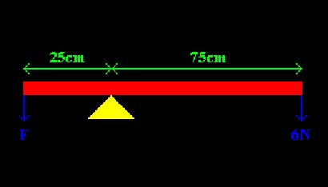
6.) Ignoring the weight of the beam, what is the value of the force F, if the beam shown in the diagram is balanced?
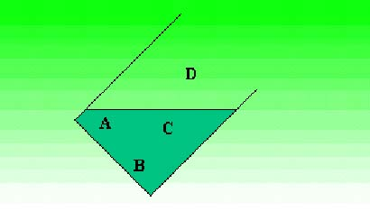
7.) The diagram shows a glass of water which has been tilted until it is just over balanced and will fall over. Which labelled point is closest to its centre of gravity?
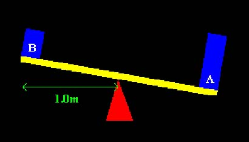
8.) The diagram shows a seesaw pivoted at its mid-point. Mass B weighs half as much as mass A. To balance the seesaw, what must the distance of mass A be from the pivot?
Forces
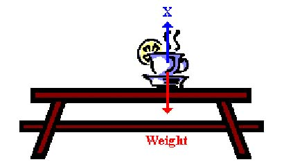
9.) The diagram shows a stationary object on a table. What are good names for the force labelled X ?
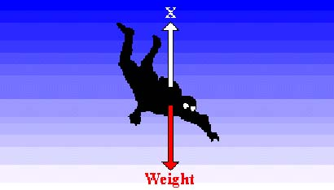
10.) The diagram shows a parachutist free falling at a steady vertical velocity. What is the equal and opposite force labelled X ?
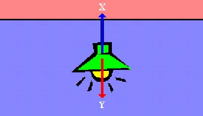
11.) The diagram shows a light hanging from a ceiling. What two forces, labelled X and Y , keep it in this position?
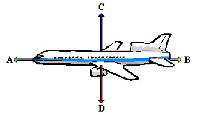
12.) The diagram shows an aeroplane in level flight, with four forces acting on it. What are each of these forces labelled, A, B, C and D respectively?

13.) The diagram shows an aeroplane in level flight, with four forces acting on it. Force A is larger than force B . Which statement gives the correct result for these two forces being unbalanced?
14.) Instead of lifting a full barrel onto the back of a truck, the deliveryman rolls it up a ramp. Which of the following is smaller when the barrel is rolled instead of lifted?
Friction
15.) Which of the statements is NOT true about friction?
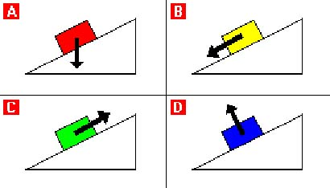
16.) Study the diagrams carefully. They show a block resting on a ramp. Which arrow correctly shows the direction that friction acts on the block?
17.) Speed will effect the amount of friction experienced. Which of the following statements is NOT true?
18.) Friction wears the surfaces in contact with each other and produces heat. This is a problem with machinery that has many surfaces sliding over each other. Which of the following can be done to keep friction as low as possible?
Newton's Laws of Motion
19.) When forces are in balance, what effect will they have on the movement of an object?
20.) What force is needed to accelerate a mass of 2 kg at 20m/s ?
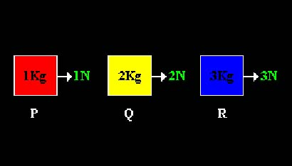
21.) The diagram shows three blocks being pulled by different forces. Which statement about the acceleration of the blocks is correct?
22.) Whenever an object is on a horizontal surface, there will always be a reaction force pushing upwards (upthrust), supporting the object. Which of the following is true about this reaction force?
Velocity and Acceleration
23.) All of the statements below are true. Which one shows how speed is different from velocity?
24.) You cycle a distance of 200m in 50 seconds. What is your average speed?
25.) A car takes 10 seconds to accelerate from rest up to a speed of 20m/s. What is the average acceleration during the 10 seconds?
26.) A car takes 10 seconds to accelerate uniformly from rest until it reaches a speed of 20m/s. What is the acceleration of the car?
27.) A ball is thrown vertically upwards into the air and when it returns after an interval of 4 seconds, it is caught. How long does the ball take to reach the top (the point where its upwards velocity is zero)?
28.) A 10Kg mass is travelling with a speed of 15m/s. It is brought to rest in 1 second. What is the average force acting on it to bring it to rest?
Distance and Velocity Graphs
29.) On a Distance - Time graph, what is the gradient (slope) of the line equal to?
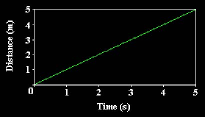
30.) The graph shows how the distance of a moving object, starting from rest, varies with time. How far does the object travel in 5 seconds?
31.) On a Distance - Time graph, what do flat sections on the graph represent?
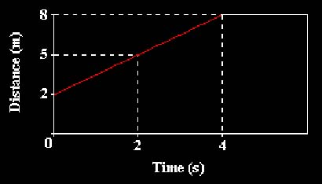
32.) The graph shows how the distance of a car increases with time. What is the speed of the car?
33.) On a Distance - Time graph, what do curved lines represent?
34.) On a Velocity - Time graph, what is the gradient (slope) of the line equal to?
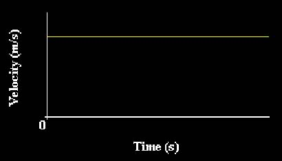
35.) The graph shows velocity against time for a motorbike. Which of the statements below is correct?
36.) On a Velocity - Time graph, what is the area under any section equal to?
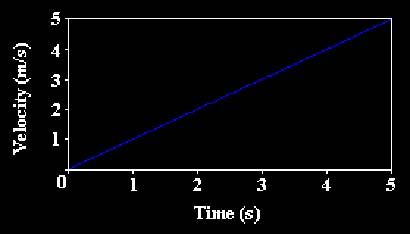
37.) The graph shows how the velocity of a moving object, starting from rest, varies with time. What is the acceleration of the moving object?
Resultant Force
38.) A car of mass 2000Kg has an engine which provides a driving force of 5000N. What is its acceleration when first setting off from rest?
39.) When does an object reach terminal velocity?
40.) On the Moon there is no air. If a hammer and a feather are dropped simultaneously from the same height on the Moon, which one will hit the surface first?
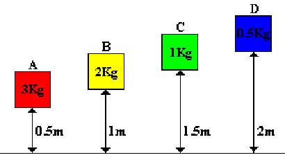
41.) The diagram shows four boxes of different masses which have been lifted up through different heights from the ground. They are being held stationary at those heights. If the boxes fall to the ground, which one will reach the greatest speed?
42.) On Earth, things fall at different speeds, and the terminal velocity of any object is determined by its drag in comparison to the weight of it. Which of the following is the most likely cause for different objects to fall at different speeds on Earth?
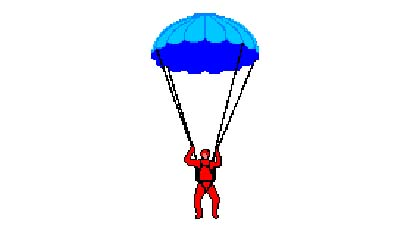
43.) The diagram shows a parachutist who is falling with a constant velocity. Which of the following shows possible values for both the weight of the parachutist and the air resistance acting on the parachute?
Stopping Distances
44.) When driving a car, which of the following will decrease your thinking distance?
45.) When driving a car, which of the following will decrease your braking distance?
46.) When a car travels at 10m/s, it has a braking distance of 6m. If the same car travels at 20m/s, what will be its braking distance?
Hooke's Law
47.) Which of the following states Hooke's Law?
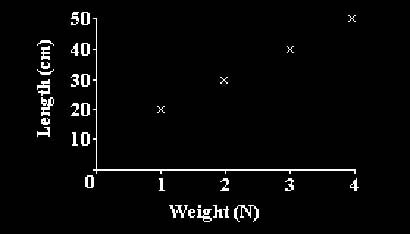
48.) The length of a spring when weights are hung on it is shown in the graph. What was the length of the spring before any weights were hung on it?
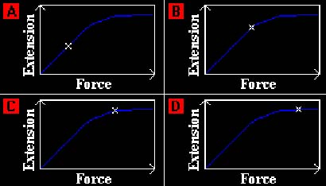
49.) A spring is stretched using different forces, and the corresponding extension is noted. A force - extension graph is then plotted. Which of the graphs correctly labels the elastic limit for the results of the experiment? The white X indicates the elastic limit.
Pressure
50.) Pressure is the force acting on unit area of a surface. If a force is spread over a large area, the pressure will be low. Which of the following is designed to concentrate a force on a small area to create a high pressure?
51.) When a bicycle tyre is inflated, an area of 5cm is in contact with the ground. If the weight of the bicycle is 300N and this is evenly distributed between the two tyres, what is the pressure exerted on the ground by each tyre?
52.) Which of the following statements is NOT true about pressure?
53.) Dams have to be built much thicker at the bottom. Which statement best describes why this is?
54.) What is the unit of pressure?
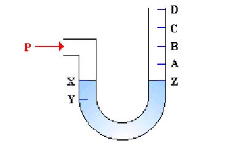
55.) The device shown is a manometer. It initially contains liquid, between points X and Z . When a pressure P above atmospheric pressure is applied to the left hand arm, the liquid level at X drops to Y . To which point will the liquid level at Z rise when a pressure of 3P above atmospheric pressure is applied to the left arm?
Boyle's Law
56.) Which of the following correctly states Boyle's law?
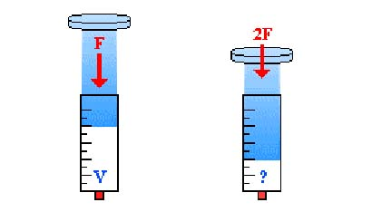
57.) A gas syringe is used to demonstrate Boyle's law. Study the diagram carefully. When a force F is applied to the syringe, the gas has a volume V . What volume will the gas have when the force becomes 2F ?
58.) A gas is made to expand from a volume of 200cm at a pressure of 20Pa, down to a pressure of 10Pa. If the temperature remains the same, what new volume does the gas now have?
59.) A gas is compressed from a volume of 300cm at a pressure of 2.5 atmospheres, down to a volume of 75cm . What new pressure does the gas now have?
60.) The kinetic theory explains Boyle's law by saying that the pressure which a gas exerts on the container is caused by the particles hitting and rebounding off the walls of the container. What two things does the pressure depend on?
Extra Questions
61.) A cyclist and his bike have a mass of 80Kg. When travelling at 10m/s, the cyclist has to brake hard with a braking force of 800N to avoid a hazard ahead of him. What is the distance the cyclist travels form the time he applies the brakes, to when he comes to rest?
62.) A gas has a volume of 125cm and a pressure of 10Pa. To reach this state, the gas was made to expand from a volume of 25cm , without the temperature of the gas changing. What pressure did the gas have before it expanded?
63.) A car of mass 2000Kg has an engine which provides a driving force of 5000N. At 70mph the drag force on the car is 4500N. What is its acceleration when travelling at 70mph?
64.) A coach leaves Leeds at 09:15. Its destination is London, a distance of 200 miles. If the average speed is 50 miles per hour, which of the following is the arrival time in London?
65.) An astronaut has a weight of 160N on the Moon. If g on the Moon is 1.6N/Kg, and on the Earth g is 10N/Kg, what would the astronaut's weight be on the Earth?
66.) When forces do not cancel out, they are said to be unbalanced. Which of the following is NOT an effect of unbalanced forces on an object?
67.) Which of the following would produce an acceleration of 2m/s ?
68.) A car accelerates from rest at 3m/s for 8 seconds. What is its final speed?
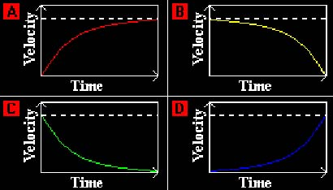
69.) An object is dropped and it free falls to Earth. Study the graphs carefully. The dotted white line shows the object's terminal velocity. Which graph correctly shows the object reaching its terminal velocity?
70.) A motorbike has 225,000J of kinetic energy. What is the required braking force if the motorbike travels 15m before coming to rest?
71.) A car master piston has an area of 4cm . If a force of 400N is applied to it and the slave piston has an area of 40cm , what is the force exerted on the brake disc?
72.) A gas that follows Boyle's law has a pressure of 25N/m and a volume of 4cm . What was its volume before it got compressed, if the pressure before was 10N/m ?
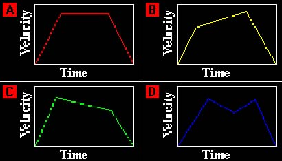
73.) A bus starts from traffic lights, accelerates to a uniform velocity and then stops at the next bus stop. Which of the Velocity - Time graphs could represent the motion of the bus?
74.) You are standing on the platform of a station and notice that a train passes you in 10 seconds. If the train is 200m long, what is the speed of the train?
75.) A force of 17.6N acts on an object and it accelerates at 3.2m/s . What is its mass?
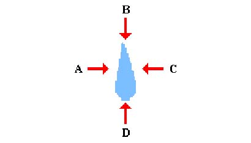
76.) The diagram shows a raindrop falling vertically downwards under the force of gravity. Which arrow shows the direction of the air resistance acting on the drop?
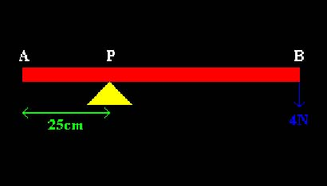
77.) The diagram shows a beam AB of length 1m supported at P. The distance AP is 25cm and the beam has a weight of 4N attached at B. What downward force is needed at point A to make the beam balance? Ignore the weight of the beam.
78.) A clown of mass 40Kg, balances evenly on two stilts. If each stilt has an area of 8cm in contact with the ground, what is the pressure exerted by the clown on one stilt? Take the acceleration due to gravity g to be 10 m/s .
79.) A force of 24N is used to accelerate a mass of 12Kg. What is the objects acceleration?
80.) A piece of metal has a density of 6g/cm and a volume of 20cm . What is its mass?
Right:
0
Wrong:
0
Attempts:
0